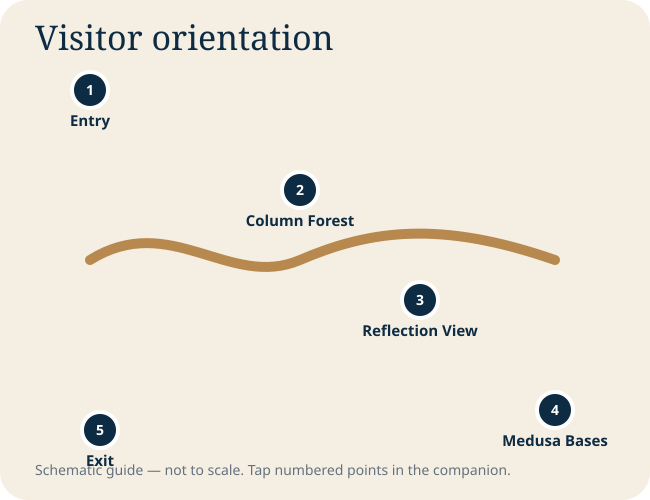

Istanbul chapters
Field guide
Visitor strategy
Use the cistern as a deliberate midday reset. Let the initial crowd move ahead, then establish a slower rhythm so the reflections and column repetition become visible.
Look diagonally rather than straight down the aisles to exaggerate depth and rhythm.
Reflections double the architecture; a stable phone position matters more than aggressive zoom.
The sideways and inverted heads are reused ancient stone. Their unusual orientation has inspired many explanations, but certainty is limited.
The columns were gathered from different sources, producing subtle variations in shafts and capitals.
Low-light photography
- Brace the phone against a rail where permitted
- Tap on the brightest lit column to avoid blown highlights
- Use night mode sparingly when people are moving
- Do not use flash; it flattens the atmosphere and may be prohibited
Tap to explore the visitor sequence
Tap a numbered point for its label. Tap the expand button for a full-screen pan-and-zoom view.

Visual gallery
Photography is sourced and credited on the Photo Credits page. Operational access, prayer arrangements and ticket procedures can change; confirm locally.